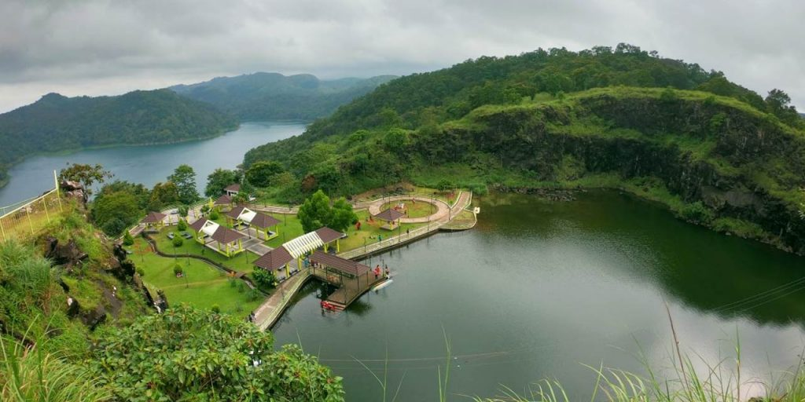

IDUKKI
IDUKKI (ഇടുക്കി),is one of the 14 districts in the Indian state of Kerala.Idukki district
lies amid the Cardamom Hills of Western Ghats in Kerala. Idukki district contains two municipal towns -
Kattappana and Thodupuzha. The district currently includes five taluks in it.
The district was constituted on 26 January 1972, by taking Peerumade, Udumbanchola, Devikulam taluks of the
former High Range division from Kottayam district and the Thodupuzha taluk from Ernakulam district.Its
division was previously headquartered at Kottayam city, but moved to Kuyilimala near Painavu and Cheruthoni in
June 1976. Malayalam and English are the two official administrative languages in the district.Tamil is the
second most spoken language in idukki district after Malayalam.
Around 66% of Kerala's power needs come from various Hydroelectric Power Projects in Idukki district.
Numerous cash crops and spices are cultivated throughout the district, making it The Spice Garden of Kerala.
A significant area in the district is protected as reserved forests and wildlife sanctuaries.The Periyar
River is a major river that originates and flows through Idukki. The Pamba River is another important river that
originates from Idukki district.
GALLERY



 BACK TO HOME
BACK TO HOME